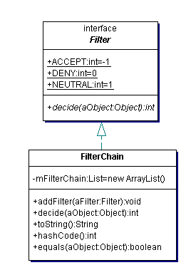

Writing your own Filters |
OverviewA Checker has a chain of Filters that decide which audit events the Checker reports through its listeners. Interface Filter and class FilterChain are intended to support general Object filtering in a filter chain.
A Filter has one method, decide(Object), that determines the result of filtering an Object. Method decide(Object) should return one of three constants, Filter.ACCEPT, Filter.DENY, or Filter.NEUTRAL which may be interpreted as the Filter accepts, denies, or is neutral towards the Object parameter. A FilterChain is a particular Filter that contains a chain of Filters. FilterChain method decide(Object) applies the Filters in chain order. If a Filter in the chain accepts the Object, then the FilterChain accepts the Object without consulting the remaining Filters. If a Filter denies the Object, then the FilterChain denies the Object without consulting the remaining Filters. If all Filters are neutral towards the Object, then so too is the FilterChain. When you require filtering based on a sequence of simpler decisions, you should consider incorporating Filters in a FilterChain. CSVFilter, a filter for comma-separated values, is an example of such filtering. Here is a UML diagram for interface Filter and class FilterChain. Writing FiltersThe Filter that we demonstrate here denies audit events for files whose name matches a regular expression. In order to enable the specification of the file name pattern as a property in a configuration file, the Filter is an AutomaticBean with mutator method setFiles(String) that receives the file name pattern. An AutomaticBean uses JavaBean introspection to set JavaBean properties such as files.
package com.mycompany.filters;
import org.apache.regexp.RE;
import org.apache.regexp.RESyntaxException;
import com.puppycrawl.tools.checkstyle.api.AuditEvent;
import com.puppycrawl.tools.checkstyle.api.AutomaticBean;
import com.puppycrawl.tools.checkstyle.api.Filter;
import com.puppycrawl.tools.checkstyle.api.Utils;
public class FilesFilter
extends AutomaticBean
implements Filter
{
private RE mFileRegexp;
public FilesFilter()
throws RESyntaxException
{
setFiles("^$");
}
public int decide(Object aObject)
{
if (!(aObject instanceof AuditEvent)) {
return Filter.NEUTRAL;
}
final AuditEvent event = (AuditEvent) aObject;
final String fileName = event.getFileName();
if ((fileName != null) && mFileRegexp.match(fileName)) {
return Filter.DENY;
}
else {
return Filter.NEUTRAL;
}
}
public void setFiles(String aFilesPattern)
throws RESyntaxException
{
mFileRegexp = Utils.getRE(aFilesPattern);
}
}
Using FiltersTo incorporate a Filter in the filter chain for a Checker, include a module element for the Filter in the configuration file. For example, to configure a Checker so that it uses custom filter FilesFilter to deny reporting of audit events for files whose name contains "Generated", include the following module in the configuration file:
<module name="com.mycompany.filters.FilesFilter">
<property name="files" value="Generated"/>
</module>
Huh? I can't figure it out!That's probably our fault, and it means that we have to provide better documentation. Please do not hesitate to ask questions on the user mailing list, this will help us to improve this document. Please ask your questions as precisely as possible. We will not be able to answer questions like "I want to write a listener but I don't know how, can you help me?". Tell us what you are trying to do (the purpose of the filter), what you have understood so far, and what exactly you are getting stuck on. ContributingWe need your help to keep improving Checkstyle. Whenever you write a filter that you think is generally useful, please consider contributing it to the Checkstyle community and submit it for inclusion in the next release of Checkstyle. |
Copyright © 2002-2003 Oliver Burn. All rights Reserved.